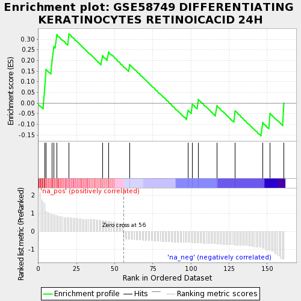
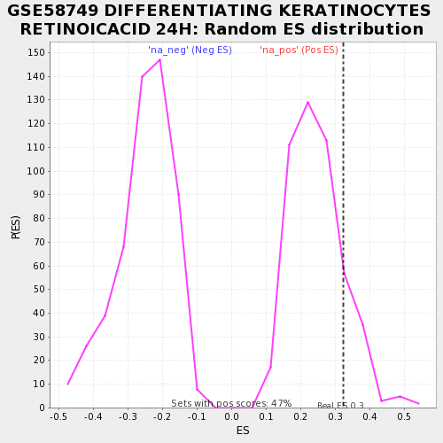

| | | Dataset | testA |
| Phenotype | NoPhenotypeAvailable |
| Upregulated in class | na_pos |
| GeneSet | GSE58749 DIFFERENTIATING KERATINOCYTES RETINOICACID 24H |
| Enrichment Score (ES) | 0.32506487 |
| Normalized Enrichment Score (NES) | 1.3169094 |
| Nominal p-value | 0.16101696 |
| FDR q-value | 0.45262843 |
| FWER p-Value | 1.0 |
Table: GSEA Results Summary

Fig 1: Enrichment plot: GSE58749 DIFFERENTIATING KERATINOCYTES RETINOICACID 24H
Profile of the Running ES Score & Positions of GeneSet Members on the Rank Ordered List

Fig 2: GSE58749 DIFFERENTIATING KERATINOCYTES RETINOICACID 24H: Random ES distribution
Gene set null distribution of ES for GSE58749 DIFFERENTIATING KERATINOCYTES RETINOICACID 24H